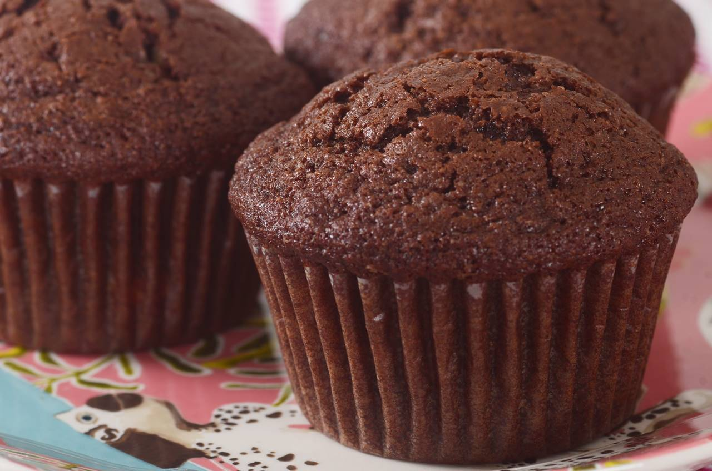

muffins

Description
Leftover cranberry sauce is obviously great on turkey sandwiches, and it's even delicious warmed up and spooned
over ice cream or pancakes, but have you tried it in muffins? This easy recipe for cranberry muffins uses a cup
of your smooth or chunky leftover cranberry sauce. The batter comes together in minutes and the moist, sweet
muffins are perfect for a post-Thanksgiving breakfast or snack.
Ingredients
- Flour: Two cups of all-purpose flour give these leftover cranberry sauce muffins structure.
- Sugar: Use a combination of white and brown sugar for ultimate sweetness.
- Baking powder: Baking powder acts as a leavener, which means it makes the batter rise and
creates a fluffy
texture.
- Spices and flavorings: These cozy muffins are flavored with cinnamon, cardamom, a pinch of
salt, and vanilla
extract.
- Leftover cranberry sauce: You can use homemade or store-bought cranberry sauce.
- Milk: Any milk you have on hand is fine, from regular whole milk to your favorite
alternative milk. Some
reviewers suggest substituting orange juice.
- Oil: Vegetable oil adds moisture without imparting any flavor.
- Egg: One whole egg adds structure, richness, and moisture.
Steps
- Mix the wet ingredients: Beat the cranberry sauce, milk, oil, egg, and vanilla until
well-combined.
- Mix the dry ingredients: Mix the remaining ingredients in a separate bowl, then slowly
incorporate the dry
mixture into the wet mixture.
- Bake the muffins: Pour the batter into lined muffin cups and bake in a preheated oven
until the muffins are
golden brown.